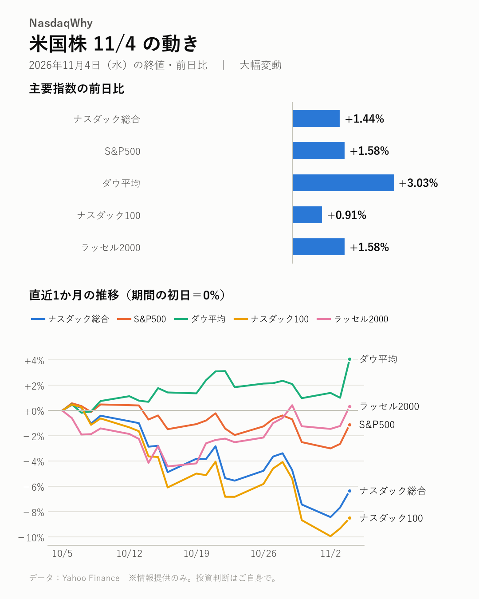
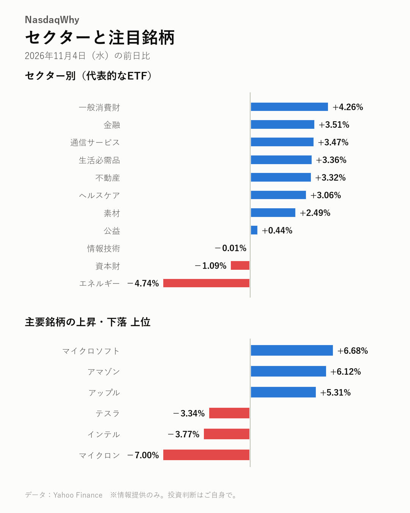

11/4の米国株：中間選挙後に大型ハイテク株が買われ、ダウ平均は+3.03%と大幅高。半導体株は売られた。
2026年11月4日（水）の米国市場（日本時間の翌朝更新） ｜ 大幅変動

主要指数
| 名前 | 終値 | 前日比 | 騰落率 |
|---|---|---|---|
| ナスダック総合 | 25,736.51 | +364.50 | +1.44% |
| S&P500 | 7,688.62 | +119.70 | +1.58% |
| ダウ平均 | 53,356.12 | +1,569.40 | +3.03% |
| ナスダック100 | 28,437.17 | +256.91 | +0.91% |
| ラッセル2000 | 2,856.95 | +44.50 | +1.58% |
なぜ動いた？
- 中間選挙の結果で先行きの不透明感が薄れ、マイクロソフトやアマゾン、アップルなど大型ハイテク株に買いが集まった。（出典：CNBC、The Motley Fool、Yahoo Finance、24/7 Wall St.）
- クラウドの供給がひっ迫し、値上げしやすくなるとの見方がマイクロソフトとアマゾンの支えになった。（出典：MarketWatch）
- 選挙結果がデータセンター投資の減速を意識させ、マイクロンなど半導体株が売られた。（出典：CNBC、MarketWatch）
- マスク氏に関連する銘柄にも売りが出て、テスラが下げた。（出典：CNBC、Yahoo Finance）
深掘り：大きく動いた背景
中間選挙の結果を受け、米国株は幅広く買われた。ダウ平均は+3.03%と大きく上げ、S&P500は+1.58%。ナスダック総合は+1.44%、中小型株のラッセル2000は+1.58%だった。 けん引役は大型ハイテク株だ。CNBCによると、選挙結果で投資家の不透明感が薄れ、クラウド大手とアップルに買いが集まった。マイクロソフトは+6.68%と上場来高値を更新した。アマゾンは+6.12%、アップルは+5.31%と急伸。マーケットウォッチは、クラウドの供給ひっ迫で値上げしやすくなるとの運用担当者の見方を紹介している。 データセンター関連は逆風を受けた。CNBCは、テキサス州知事選の結果が投資減速のリスクを高めたと報じた。マイクロンは-7.00%、エヌビディアは-3.17%と売られた。マスク氏に関連する銘柄も軟調で、テスラは-3.34%。同じハイテクでもクラウド大手と半導体で明暗が分かれ、情報技術セクターは-0.01%とほぼ横ばい。ナスダック100の上げも+0.91%にとどまった。 原油先物(WTI)は-7.86%と急落し、エネルギー株も大きく下げた。ただ、原油安の明確な材料は見当たらない。
セクター
一般消費財が+4.26%、金融が+3.51%、通信サービスが+3.47%と幅広く上昇した。エネルギーは-4.74%と急落。情報技術は-0.01%とほぼ横ばいだった。
- 騰落率の高い順：一般消費財 +4.26%、金融 +3.51%、通信サービス +3.47%
- 騰落率の低い順：エネルギー -4.74%、資本財 -1.09%、情報技術 -0.01%

注目銘柄
マイクロソフトは+6.68%、アマゾンは+6.12%と急伸し、アップルも+5.31%。マイクロンは-7.00%、エヌビディアは-3.17%と下げた。データセンター投資の減速懸念が重荷になった。
- 上昇：マイクロソフト（MSFT）+6.68%、アマゾン（AMZN）+6.12%、アップル（AAPL）+5.31%
- 下落：マイクロン（MU）-7.00%、インテル（INTC）-3.77%、テスラ（TSLA）-3.34%
関連市場
| 名前 | 終値 | 前日比 | 騰落率 |
|---|---|---|---|
| 米10年債利回り | 4.894% | -0.058pt | ― |
| ドル円 | 158.42 | +0.50 | +0.32% |
| 金先物 | 4,070.60 | +130.20 | +3.30% |
| 原油先物(WTI) | 88.54 | -7.55 | -7.86% |
| ビットコイン | 80,126.51 | +2,781.46 | +3.60% |
米10年債利回りは4.894%に低下した。金先物は+3.30%、ビットコインは+3.60%と上昇。原油先物(WTI)は-7.86%と急落したが、明確な材料は見当たらない。
今後の注目
- 12/9（水） FOMCの金融政策発表と金利の行方（公式発表）
- 選挙結果を受けたデータセンター投資の動向（CNBC、MarketWatch）
出典（見出し）
- CNBC：Hyperscalers and Apple surge after election results remove investor uncertainty（記事）
- The Motley Fool：Alphabet, Amazon, and Microsoft All Surged Today. You Can Thank the Big Blue Wave.（記事）
- Yahoo Finance：Apple, Microsoft hit all-time highs as Nasdaq surges 2% in post-election rally: AlphaCheck（記事）
- 24/7 Wall St.：Amazon Rallies 7%, Apple and Microsoft Climb 5% as Big Tech Leads Post-Election Rebound（記事）
- MarketWatch：Microsoft and Amazon combined to see a $424 billion market-cap boost — and these factors show why（記事）
- CNBC：AI data center stocks and Musk's SpaceX decline as Texas governor result raises risks of a slowdown（記事）
- MarketWatch：Micron and other chip stocks slip as election results strike at the core of data-center optimism（記事）
- Yahoo Finance：Tech, AI Stocks Split After Democratic Sweep: Microsoft Jumps, Tesla and Nvidia Tank（記事）
データ：Yahoo Finance